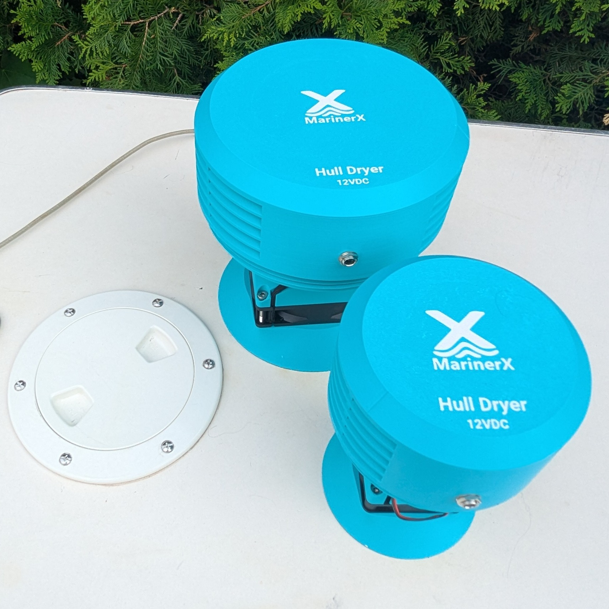

Moisture control
Purpose-built airflow for drying trapped hull spaces through existing access points.
Clever Tools for Smooth Sailing
Featured product
The MarinerX Hull Dryer threads into inspection ports, deck plates, and hatches to move air through trapped hull spaces. It is built for small boats that need a cleaner, repeatable way to deal with moisture.

MarinerX gear is designed for the practical jobs that make boat ownership easier: moisture control, clean rigging, reliable fit, and less improvising at the ramp.
Purpose-built airflow for drying trapped hull spaces through existing access points.
Designed around common screw-in inspection ports, with adapter support for additional brands and styles.
Hull Dryer airflow and drying performance have been tested and refined through practical iteration.
Fit confidence
Use the Inspection Port Guide to compare size, engagement type, brand cues, and adapter notes before choosing a base unit or adapter.
Simple gear for small boats, built around fit, utility, and repeatable setup.
"This is the second time I've bought from this seller. The items came in well packaged and in mint condition. They fitted my sailing dinghy perfectly. They are well made and look great. Well pleased again."
"Came in well packed, fits my boat spar perfectly (Scorpion Dinghy), easy to fit, looks good, great value for the money. Brand new and I am sure they will last a long time. Very happy with the product and the seller."